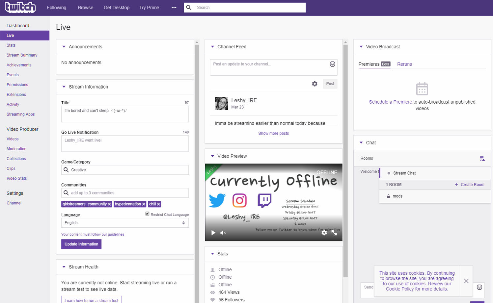
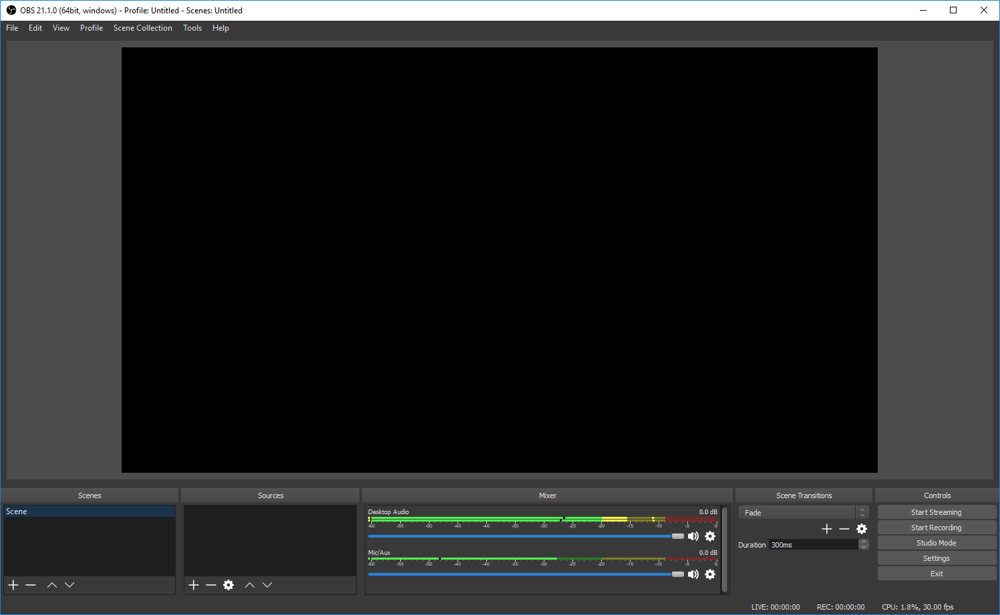

Twitch

First of all you need a Twitch account, go to www.twitch.tv and click create an account. Once you have done this go to your dashboard and begin setting it up. Your twitch dashboard is where you go for everything. From your dashboard you can controll your stream titles and what audience you're broadcasting to. You can also see your previous stream summeries and edit all your channel settings.
OBS

You will need some sort of capturing software, personally I recommend OBS as it is the best free recording software that is widely used by the majority of streamers. Once you've downloaded the broadcast software of your choice, take the time to explore the settings and then feel free to experiment. Choose your favorite PC game and host a few practice streams. After a while maybe start looking at putting some overlays on your stream.